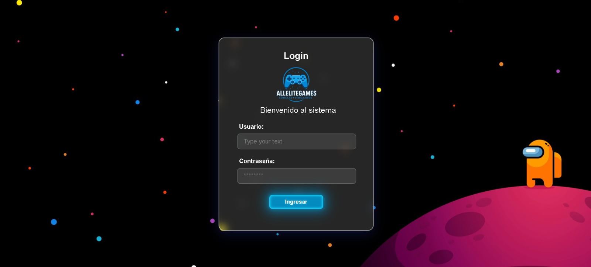
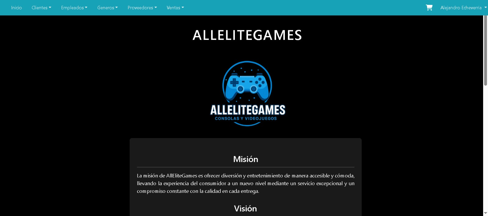
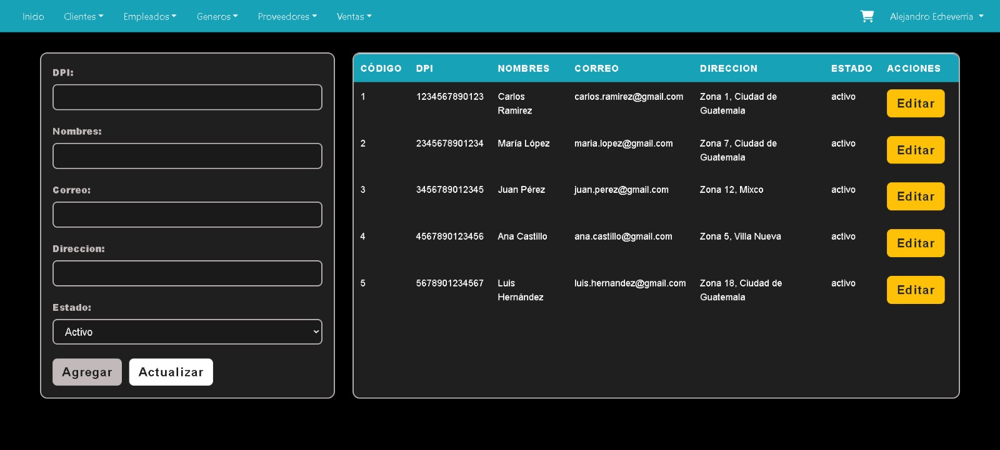

Gestor de Tienda de Videojuegos
AllEliteGames: aplicación web en Java (arquitectura MVC) para gestionar toda la operación de una tienda de videojuegos y consolas.
Contexto
AllEliteGames es el sistema de gestión de una tienda de videojuegos y consolas. Nació como proyecto académico en equipo en el Instituto Kinal, con una meta clara: llevar a software toda la operación del negocio, desde el catálogo de productos hasta las ventas, los clientes y los proveedores.
El problema
Un negocio así maneja muchas entidades relacionadas —productos, existencias, clientes, empleados, proveedores, ventas, devoluciones, membresías— que a mano son difíciles de mantener consistentes. El reto era centralizarlo todo en una aplicación web, con acceso controlado y datos fiables.
Mi rol
Fui Scrum Master del equipo —coordinando la planificación, el seguimiento de las tareas y las entregas por iteraciones— y, además, el mayor contribuidor de código del repositorio. Participé en las tres capas de la aplicación.
- Coordinación del equipo bajo Scrum y del flujo de trabajo en Git (ramas por persona y por funcionalidad).
- Modelado de la base de datos y de la capa de acceso a datos (DAO) con JDBC y MySQL.
- Lógica del servlet controlador y las operaciones CRUD de las entidades.
- Vistas en JSP y validación de formularios en el servidor.
La solución
El sistema sigue una arquitectura MVC clásica de Java web. Un único servlet controlador recibe cada petición, la enruta según la acción solicitada y delega la persistencia en una capa de objetos de acceso a datos (DAO), uno por entidad. Las vistas son páginas JSP y los datos viven en MySQL, accedidos mediante JDBC.
- Autenticación de empleados con sesión de usuario (login mediante un servlet dedicado).
- CRUD completo —listar, agregar, editar, actualizar y eliminar— sobre doce entidades: videojuegos, consolas, géneros, proveedores, tiendas, clientes, empleados, ventas, devoluciones, suscripciones, membresías y métodos de pago.
- Validación en el servidor: campos obligatorios, longitudes máximas, formatos con expresiones regulares y reglas de negocio (p. ej., que la fecha fin de una suscripción no sea anterior a su inicio).
- Modelo relacional que conecta las entidades entre sí: un videojuego pertenece a un género y a un proveedor; una venta enlaza cliente, empleado y método de pago.
- Base de datos poblada con datos de ejemplo mediante un script SQL y procedimientos almacenados.
Galería



Resultados y aprendizajes
El proyecto consolidó mis bases de Java para la web y de bases de datos relacionales, y me enseñó el valor de separar responsabilidades en capas —modelo, vista y controlador—. Sacarlo adelante en equipo, con Git y ramas por persona, fue además una buena práctica de colaboración real.
Si lo retomara, reforzaría la seguridad: consultas parametrizadas en todas las operaciones de datos, cifrado de contraseñas y credenciales de conexión fuera del código. También evolucionaría de JSP hacia una API con un frontend independiente.